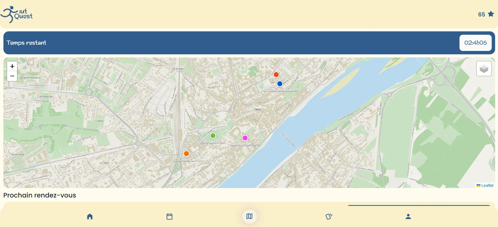
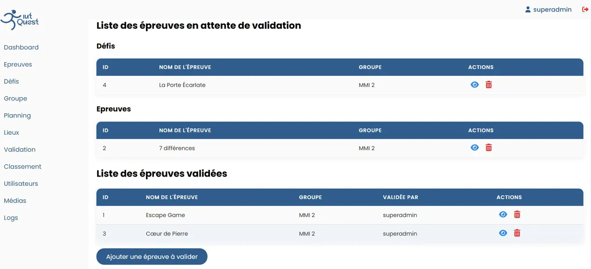
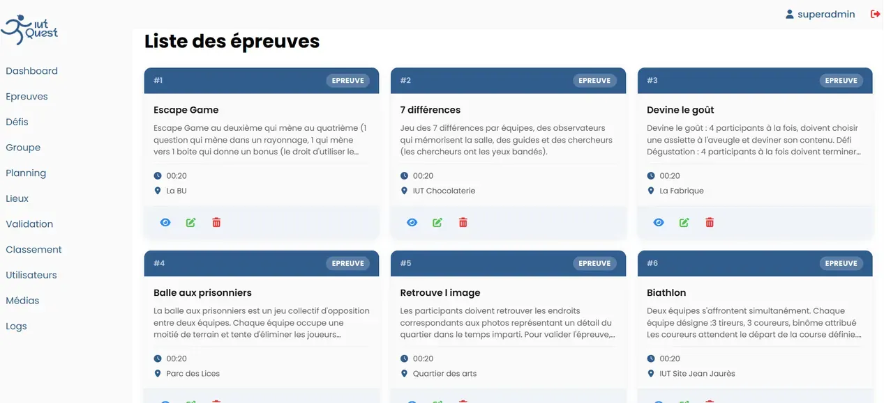

01 - PRESENTATION
A propos du projet
IUT Quest est un jeu de piste grandeur nature inspiré de Pékin Express, conçu pour le challenge inter-filières de l'IUT de Blois. Le temps d'une journée, jusqu'à 12 équipes de 6 à 10 personnes (étudiants, enseignants et personnel administratif) s'affrontent à travers toute la ville.
Le parcours s'étend sur les deux sites de l'IUT, la bibliothèque universitaire, le centre-ville et le château. Chaque équipe enchaîne six grandes épreuves collectives planifiées à l'avance, et pioche en parallèle dans un catalogue d'une centaine de défis libres en photo, vidéo ou texte, valant de 5 à 30 points selon leur difficulté. L'équipe qui totalise le plus de points repart avec le trophée.
Réalisé dans le cadre de la SAE 4012, le projet a été mené à quatre : Djibril sur la maquette, Louis et Paul sur le back-end, et moi sur le front-end ainsi que sur une partie des traitements PHP. Nous avons suivi l'avancement en Kanban sur Trello, avec une branche Git par tâche et une relecture systématique avant chaque merge.
02 - MON ROLE
Mes responsabilités
J'ai porté le front-end de l'application publique, celle qu'utilisent les équipes sur le terrain, et pris en charge une partie des traitements PHP qui l'alimentent. L'interface est pensée mobile-first et installable comme PWA : les joueurs passent la journée dehors, sur leur téléphone et en 4G.
La pièce maîtresse est la carte temps réel. J'ai intégré Leaflet et branché la géolocalisation du navigateur : une fois le suivi autorisé, watchPosition alimente la session et pousse régulièrement la position vers l'API. Chaque équipe voit ainsi les autres se déplacer, chacune avec sa couleur, aux côtés des lieux clés de l'événement.
Côté serveur, j'ai écrit plusieurs traitements en PHP avec leurs contrôleurs Laravel et leurs vues Blade, pour servir aux écrans les données dont ils ont besoin. Côté interface, j'ai développé le profil et la progression de l'équipe, la barre d'avancement, le minuteur de fin d'événement, la vérification du format des médias avant envoi, et le verrouillage du classement une heure avant la fin, pensé pour éviter les contestations de dernière minute.
03 - TECHNOLOGIES
Stack technique
Groupes, épreuves, positions et validations
Géolocalisation et carte temps réel avec Leaflet
04 - FONCTIONNALITES
Fonctionnalités principales
Carte temps réel
Chaque équipe apparaît sur la carte avec sa couleur, aux côtés des lieux de l'événement. La légende et l'heure de dernière actualisation indiquent à quel point la position affichée est fraîche.
Épreuves et défis
Six grandes épreuves planifiées par créneau horaire, complétées par un catalogue de défis libres ouverts jusqu'à 17 h, chacun avec sa preuve à fournir : photo, vidéo ou texte.
Validation par un administrateur
Aucun point n'est attribué automatiquement. Un administrateur ouvre la preuve soumise, l'accepte ou la refuse, et le système signale les équipes adverses présentes sur le même créneau.
Traitement des médias en arrière-plan
Les photos sont converties en WebP et les vidéos confiées à un job asynchrone, pour qu'un envoi depuis le terrain ne bloque jamais l'interface.
Back-office complet
Gestion des lieux, des épreuves, des groupes et du planning, avec détection des conflits de créneaux et export PDF de la feuille de départ accompagnée de son QR code.
05 - DEFIS
Défis rencontrés
Les points étaient crédités dès la soumission d'une preuve : un simple retour arrière du navigateur suffisait à les compter deux fois, et un refus de l'administrateur ne les retirait pas.
Nous avons introduit un état explicite sur chaque défi (non validé, en cours de validation, validé) et déplacé l'attribution des points au seul moment où un administrateur tranche. Le score ne dépend plus de ce que fait le joueur, mais de ce qui a été validé.
Sur le terrain, en 4G, l'envoi d'une vidéo de plusieurs dizaines de mégaoctets bloquait l'interface, et la preuve pouvait être ouverte à la validation avant même la fin du transfert.
Les photos sont compressées en WebP côté serveur et les vidéos confiées à un job asynchrone appuyé sur FFmpeg. Le fichier est stocké temporairement et n'apparaît à la validation qu'une fois le traitement terminé.
Le navigateur redemandait l'autorisation de géolocalisation à chaque changement de page, et les positions affichées sur la carte devenaient vite incohérentes.
L'autorisation n'est demandée qu'une fois, puis conservée en session. watchPosition prend ensuite le relais en continu et n'envoie la position à l'API qu'à intervalle régulier : assez souvent pour suivre la course, assez peu pour épargner la batterie.
06 - RESULTATS
En chiffres
12
Équipes engagées
6
Épreuves collectives
100+
Défis au catalogue
1
Journée de compétition
07 - SCREENSHOTS
Quelques captures d'écran


